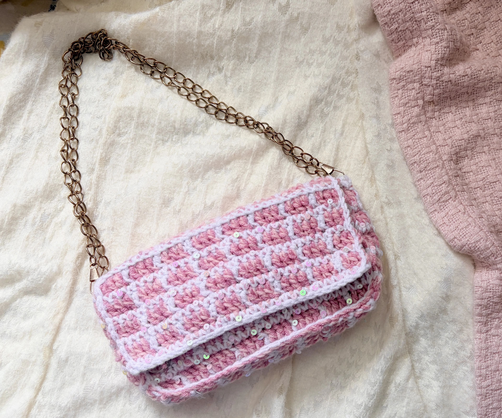
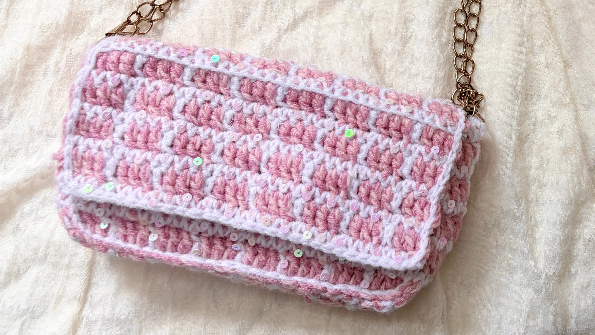

Free Crochet Pattern
How to Crochet a Tweed Bag
Looking for a chic and stylish crochet project? This crochet tweed bag is the ultimate cute accessory for parties, nights out, or carrying daily essentials like your phone and lip gloss. It uses two strands of contrasting yarn held together to create a realistic tweed pattern and features a DIY sequin thread for a touch of handmade sparkle!

About the Pattern
This crochet tweed bag is a cute accessory for parties, nights out, or carrying daily essentials like your phone and lip gloss. It uses two strands of contrasting yarn held together to create a realistic tweed pattern and features DIY sequin thread for a touch of handmade sparkle.
I recommend watching the video tutorial first, especially if you are a beginner. I walk through every color switch and assembly step slowly so you can follow along easily.
Video Tutorial
Watch the full step-by-step video tutorial before starting, especially if you are a beginner.
Materials
- Weight 3 acrylic yarn
- Loose sequins
- Sewing thread for threading sequins
- 4 mm crochet hook
- Metal chain strap
- Magnetic snap buttons
Want to shop the materials?
Check out the materials here →Pattern Details
- Skill Level: Easy / Intermediate
- Time Required: 2–3 hours
- Pattern Type: Bags & Purses
- Stitches Used: Chain (ch), single crochet (sc), double crochet (dc), slip stitch (sl st), back loop only (BLO)
Abbreviations
Written Pattern
How to Crochet the Tweed Bag
Pattern Notes
Always hold 2 strands together throughout the project.
Carry inactive yarn strands along the top of your stitches as you work to hide them.
1. Front Panel
Foundation
Ch 33 in Pink.
Row 1 — DC Tweed
Work 3 dc in Pink, 1 dc in White with Sequins. Repeat across.
Row 2 — SC Sequin
Ch 1, turn. Work 1 sc in each st across in White while sliding sequins forward randomly.
Rows 3–10
Repeat Row 1 and Row 2 for 10 rows total (5 tweed blocks). Fasten off.
2. Back Panel & Flap
Row 11 — Flap Crease
Repeat Row 1 in Back Loop Only (BLO).
Rows 12–14
Standard pattern repeat through both loops normally.
Row 15 — Flap Fold
Repeat Row 1 in Back Loop Only (BLO).
Rows 16–22
Standard pattern repeat through both loops. Fasten off.
3. Side & Base Strip
Foundation
Ch 9 in Pink.
Row 1
Work 3 dc in Pink and dc in White across (7 sts total).
Row 2
Ch 1, turn. Work 1 sc in each st across in White + Sequins.
Repeat
Continue repeating Row 1 and Row 2 until the strip is long enough to fit around the sides and bottom of the bag. (36 rows)
4. Bag Assembly & Details
Attaching Panels
Line up the side strip with the main panels and sl st them together using White yarn.
Edging
Sl st with White yarn around all raw outer edges for a neat finish.
Magnetic Closure
Make two 12-sc magic rings in Pink yarn. Insert magnetic snaps into the bases and sew them to the inside flap. Attach the matching snap ends directly to the front panel.
Strap
Clip your metal chain strap to the sides.
Your Crochet Tweed Bag Is Finished!
I hope you enjoyed making this cute crochet tweed bag. If you make one, tag me on Instagram—I’d love to see your creation!
Don’t forget to watch the full video tutorial and subscribe to Stitchy Days for more beginner crochet projects!
A Little Note from Stitchy Days ♡
Thank you so much for trying one of my crochet patterns! I hope you enjoyed making this project as much as I enjoyed creating it.
If you make one, tag me on Instagram—I’d love to see your creation!
Happy crocheting!
